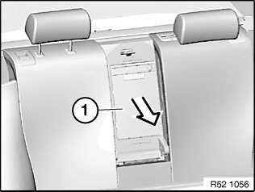
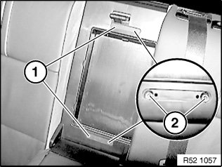
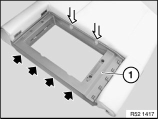
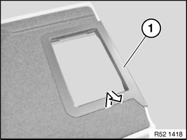

52 26 ... Removing and Installing/Replacing Ski Bag With Casing on Rear Seat (Through-Loading System)
52 26 ... Removing and installing/replacing ski bag with casing on rear seat (through-loading system)
Necessary preliminary tasks:
- Remove centre armrest or E82 only:
- filler element

Press ski bag (1) on rear side out of backrest.

Lift off cover (1).
Unfasten screws (2).
Installation:
Make sure cover is correctly installed.

Unclip single opening trim (1) towards top.
Installation:
Plastic clips must not be damaged.
If necessary, replace faulty trim.

Remove C-module trim (1) in direction of arrow.